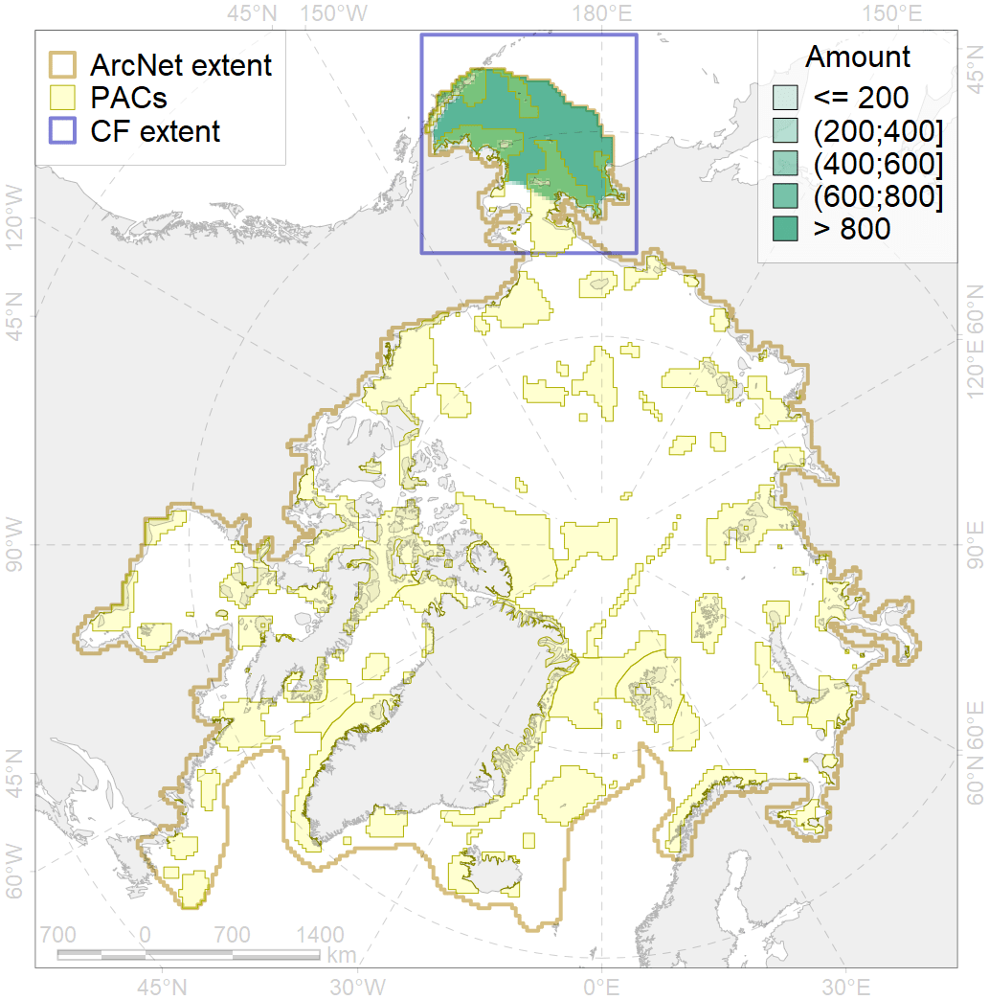
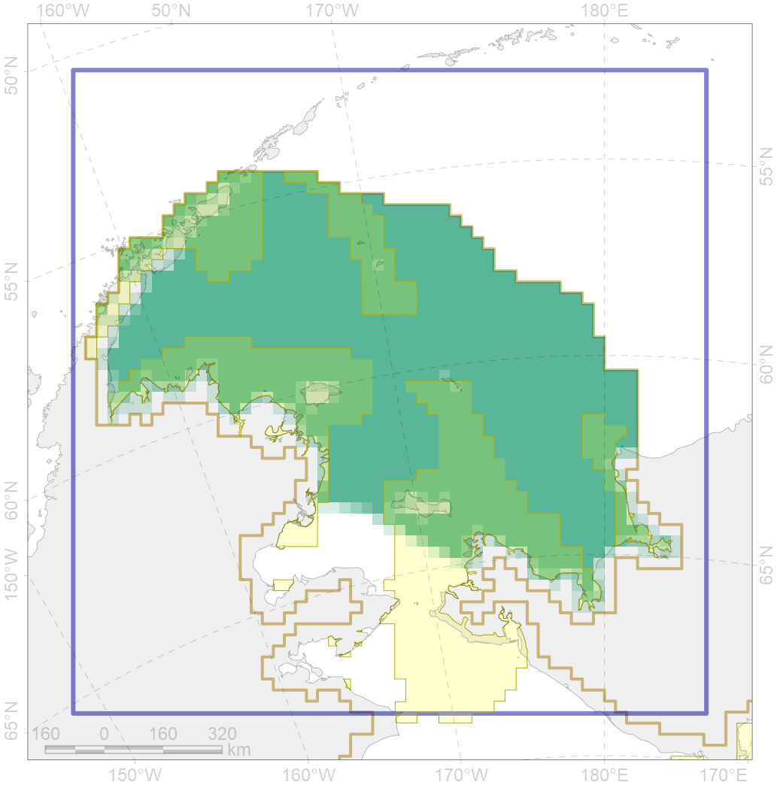

2032

| CF code | 2032 |
| CF name | Northern Fur seal range |
| Time Period | 2015 |
| Source(s) | Gelatt 2015 |
| Seasonality | January-December |
| Depth Horizon | 0-200 m |
| Methodology | Data assembled from multiple datasets |
| Use Restrictions | The data is made freely available to the public for non-commercial use |
| Author Name | Irina Trukhanova |
| Notes | |
| Scenario’s Target | 0.072 |
| Target Achievement | 0.377 (Scenario: 523.2%) |
| PAC | Share of the Total Amount within the PAC | Share of the Target Achievement for the ArcNet | PAC’s Contribution to the Target Achievement |
|---|---|---|---|
| 1 | 5.9% | 78.1% | 14.9% |
| 2 | 4.7%5.7% | 54.0%56.9% | 10.3%10.9% |
| 3 | 10.1%10.7% | 131.6%139.1% | 25.1%26.6% |
| 4 | 2.2%2.5% | 24.1%28.3% | 4.6%5.4% |
| 5 | 12.8%13.2% | 164.1%168.9% | 31.4%32.3% |
| inner | 35.7%38.0% | 451.9%471.3% | 86.4%90.1% |
| outer | 64.3%71.5% | 71.3%153.4% | 13.6%29.3% |
| † supplement values are for area consistence whereas principal values are for Accenter compatible gridded stats |